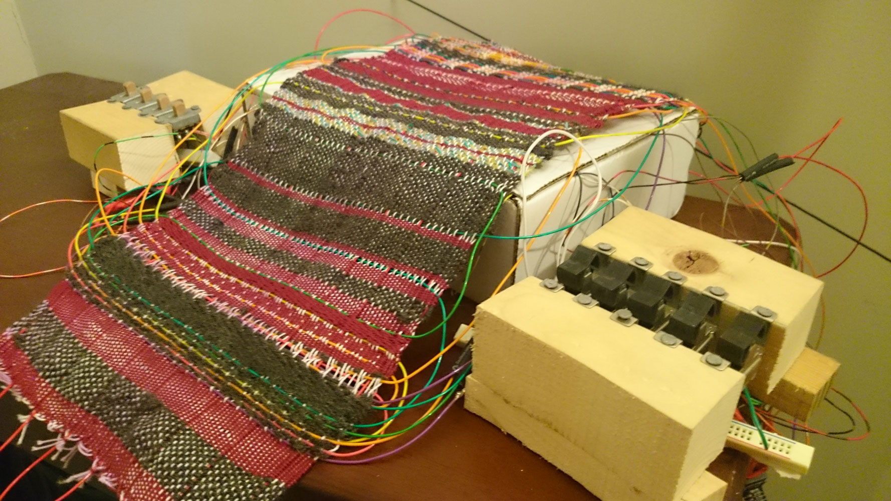
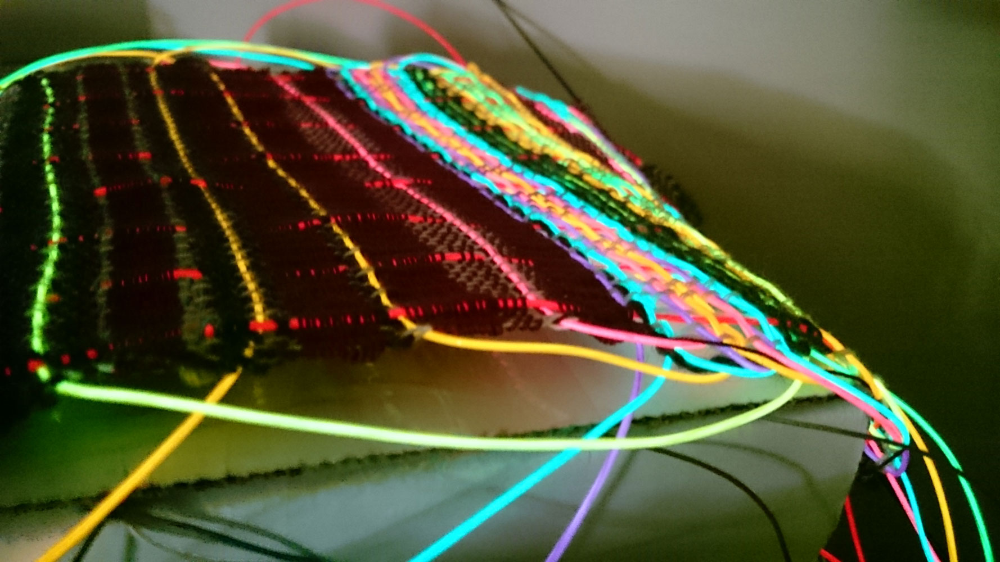
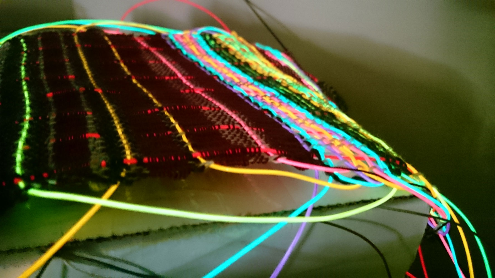

Josh Vekhter
Earlier this summer, I was walking down the street and a nice lady insisted that I take a loom from her. I took it as a sign that I needed to use it to do something interesting. Here are some pictures of the first thing that I made on it, a prototype fabric with EL wire woven in. Since completing this fabric, I have figured out how to drive individual wires programatically, and am now trying to figure out the feasibility of using the wire to sense touch
 

Close up of wire turned on.